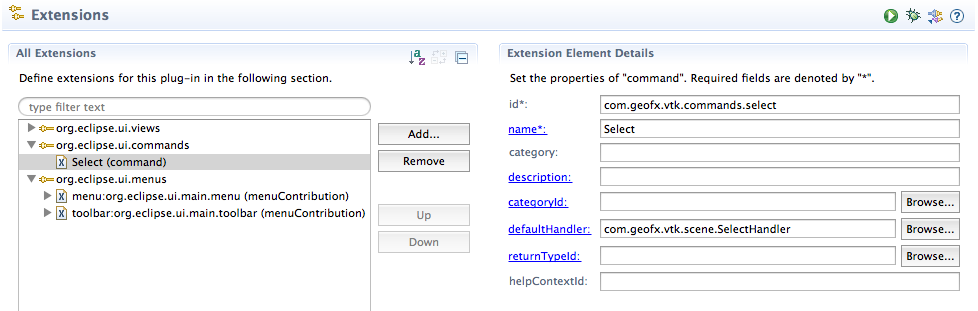
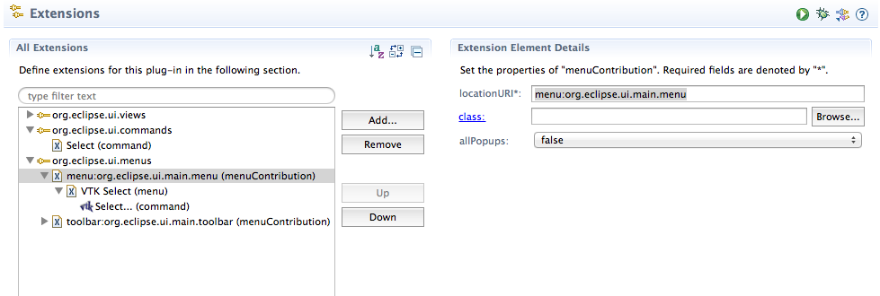
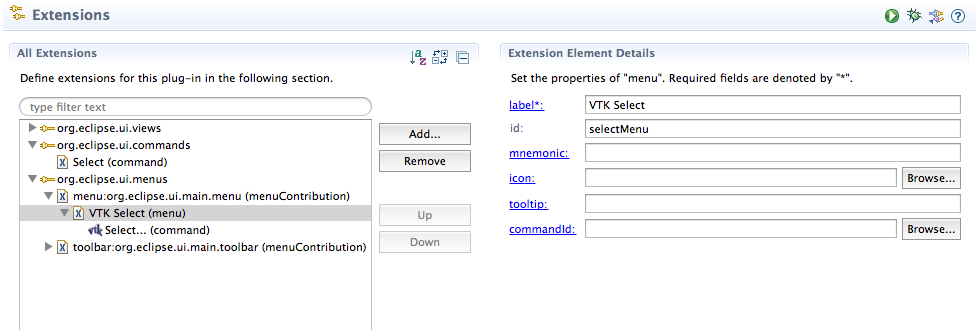
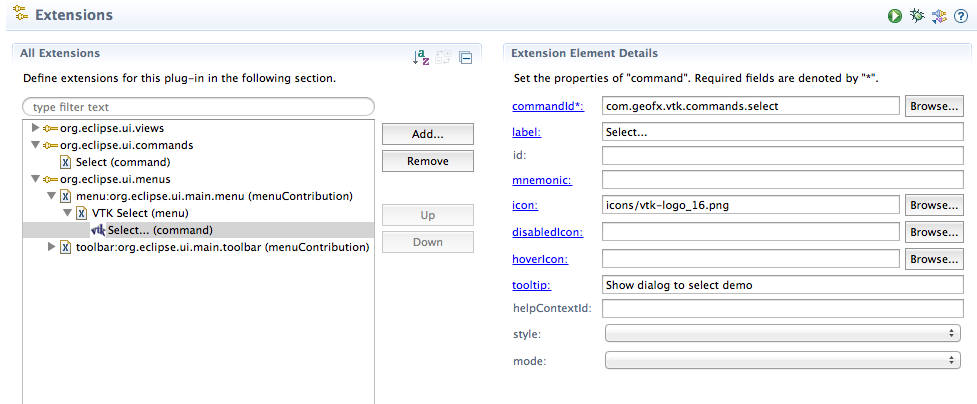
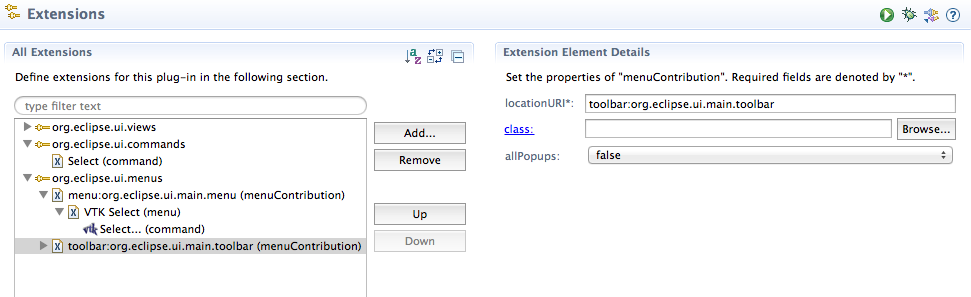
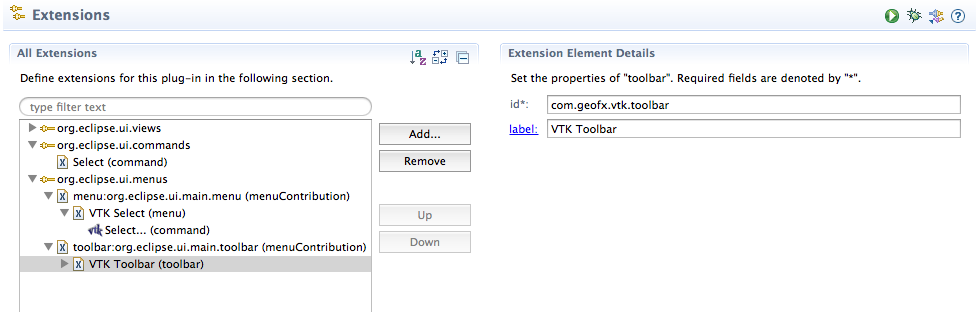
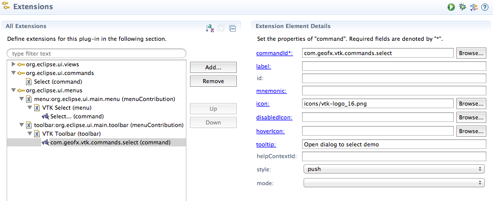

Note: The source code for this article is on github: https://github.com/rkwright/vtkscene.git
In the previoous article in this series, we created a simple Eclipse view that wrapped a vtkPanel and allowed us to run a VTK rendering demo. However, if we want to create a series of these, the process wil get cumbersome and tedious. So it makes sense to leverage the OSGI bundle support in Eclipse and Java's ability to dynamically create instances of a class to make our life easier.
The design for this is to create an Eclipse view that can dynamically instantiate a particular demo snippet and display it. Each of these demo-views are referred to as "scenes". The view has an associated dialog (with menu and toolbar UI to select it) from which the user can choose a demo (or scene) which is then displayed in the view.
There are a number of steps to this:
First step is to split the simple view from the previous article into a view, SceneView and vtk-based rendering component. This is pretty simple. The code for the VTKComposite rendering component is
public class VTKComposite extends Composite
{
private java.awt.Frame awtFrame;
private vtkPanel panel;
public VTKComposite(Composite parent)
{
super(parent, SWT.EMBEDDED |SWT.NO_BACKGROUND);
// this is perhaps not always necessary, but some implementations have
// weird artifacts (blinking, incomplete erasure) if this is not set
System.setProperty("sun.awt.noerasebackground","true");
// this tells the SWT composite to simply use the entire layout surface
this.setLayout( new FillLayout() );
// create the bridge between Swing and SWT
awtFrame = SWT_AWT.new_Frame(this);
// create the VTK rendering surface
panel = new vtkPanel();
// and add it as a child of the frame
awtFrame.add(panel);
}
}
The view class then becomes:
public class SceneView extends ViewPart
{
/**
* The ID of the view as specified by the extension.
*/
public static final String ID = "com.geofx.vtk.scene.VTKScene";
private VTKComposite vtkComposite;
private VTKScene scene;
private String sceneName;
/**
* The constructor.
*/
public SceneView()
{
Activator.setView( this );
}
public void createPartControl( Composite parent )
{
sceneName = Activator.getSceneName();
vtkComposite = new VTKComposite(parent);
this.scene = Activator.constructScene(sceneName, vtkComposite);
// we need to explicitly request the focus or we never get it
vtkComposite.getFrame().requestFocus();
}
public void dispose()
{
this.scene.dispose();
}
/**
* A public method to update the view.
*/
public void updateView()
{
if (!sceneName.equals(Activator.getSceneName()))
{
sceneName = Activator.getSceneName();
this.scene.dispose();
this.scene = Activator.constructScene(sceneName, vtkComposite);
}
this.scene.render();
}
}
The constructor just tells the plugin's Activator object (the singleton that controls the plugin's lifetime) which scene is current active, i.e. the one about to be created. In createPartControl, we get the current scene name (class) from the activator, which always holds the name of the current (or about to be) scene. Then we just instantiate this scene's rendering component. Then we pass the name of the scene and the new control to a function which dynamically creates the new scene. We will cover that a little later.
The dispose method does little in this context, but allows Eclipse or others to dispose of resources, if needed.
UpdateView is called when the scene is being changed. The old scene is first disposed then the constructScene method is called to construct the new scene. Finally the view is told to re-render itself.
That's all there is to it! Though I'll comment that it took a LOT of spelunkng through Eclipse and experimenting to determine that this is how to do this... :-) - which is one of the reasons I decided to write this series of articles.
Again, the base class for the "scenes" is very simple. It consists of
public abstract class VTKScene
{
protected VTKComposite vtkComposite;
/**
* Creates a new scene owned by the specified parent component.
*
* @param parent The Composite which holds the actual GLCanvas
*/
public VTKScene( VTKComposite composite )
{
vtkComposite = composite;
}
// a default constructor used by the ClassInfo enumerator
public VTKScene()
{
}
public abstract String getLabel();
public abstract String getDescription();
// normally nothing to do here, but can be overridden to dispose of resources properly
public void dispose()
{
}
public void render()
{
}
}
There are two constructors. The "real" one squirrels away the composite (mainly for the dispose event) and the trivial constructor which is used by the enumeration routine (covered later).
Do note that getLabel and getDescription MUST be overriden and provide a reasonable label (e.g. "Marching Cube") and "An implementation of the marching-cube algorithm").
There are several methods that normally are ignored but may occasionally be used. dispose() is always called but exists only if implementors need to do something when the "scene" is destroyed (which we will at the end of the article). Similarly, render() is not normally used for anything, but may occasionally be needed to be overridden.
One of the key aspects of this project is this abilty to construct scenes dynamically.
public static VTKScene constructScene(String name, VTKComposite composite)
{
VTKScene newScene = null;
Object[] args = {};
Class[] types = {};
Class<VTKScene> classe;
try
{
classe = (Class<VTKScene>) Class.forName(name);
if (composite != null)
{
args = new Object[1];
args[0] = composite;
types = new Class[1];
types[0] = VTKComposite.class;
newScene = (VTKScene) classe.getConstructor(types).newInstance(args);
}
else
newScene = (VTKScene) classe.getConstructor(types).newInstance();
}
return newScene;
}
This is fairly "straightforward" (another joke - this took me a fair amountof time to figure out and get to work properly). Note that there are two paths through this. One actually consructs a working instance of the class that is used. The other is only used to instantiate the class for the enumClasses method detailed below.
Once we are able to build the classes dynamically we are getting there. The other useful trick is to be able to dynamically figure out what demos we want to show. The approach is simple. Any "scenes" you wish to add to the list of available scenes needs to be subclassed from VTKScene AND needs to be in a package that has only scene-based classes. You can have as many of these packages as you like. Each package that contains scenes needs to be added to the list of example packages:
/**
* property name for the examples package
*/
public static final String VTK_SAMPLES_PACKAGE = "com.geofx.vtk.samples";
/**
* All the examples packages
*/
public static final String[] EXAMPLE_PACKAGES = { VTK_SAMPLES_PACKAGE };
When the plugin is first instantiated, the enumClasses() method is called from the plugin's start() method:
/**
* Just a simple holder for our ClassInfo
*/
public class ClassInfo
{
public String name;
public String description;
public String label;
public ClassInfo(String n, String d, String l)
{
name = n;
description = d;
label = l;
}
}
public static ArrayList<ClassInfo> getClassInfo()
{
return classInfo;
}
/**
* Using the bundle, enumerate all the classes in this plugin and see which ones are in the
* examples package. Those are the ones we will allow the user to choose.
*
* @return list of classes to choose from
*/
public void enumClasses()
{
try
{
Enumeration<?> entries = Platform.getBundle(PluginConstants.PLUGIN_ID).findEntries("/", "*" + ".class", true);
while (entries.hasMoreElements())
{
URL entry = (URL) entries.nextElement();
// Change the URLs to have Java class names
String path = entry.getPath().replace('/', '.');
// see if the class is in the package we are interested in and isn't a subclass
int start = -1;
for (String pkgName : PluginConstants.EXAMPLE_PACKAGES)
{
start = path.indexOf(pkgName);
if (start >= 0)
break;
}
int subClass = path.indexOf("$");
if (start >= 0 && subClass == -1)
{
// strip off the class suffix and we are done
String name = path.substring(start, path.length() - ".class".length());
VTKScene scene = constructScene(name, null);
classInfo.add(getClassInfo(name, scene));
}
}
}
catch (Exception e)
{
e.printStackTrace();
}
}
/**
* @param name
* @param scene
* @return
*/
private ClassInfo getClassInfo(String name, VTKScene scene)
{
ClassInfo info = new ClassInfo(name, scene.getDescription(), scene.getLabel());
return info;
}
This is straightforward, we just ask the IDE (via the Platform object) to enumerate all the classes in our plugin. We walk through the list and discard any subclasses. The others we store in the list of available scene-classes.
Note that this enumeration method can be used to search for any files - it doesn't use the class-loader or have any Java-related restricitions, it's strictly a file search within the specfied bundle.
The final step is to create (and invoke) the dialog that allows the user to view the scenes. Eclipse uses the "commands" approach to invoke UI like this dialog. The commands consist of (in this case) three parts:
These can be created in either of two ways, by directly editing the plugin.xml file or by using the UI of the PDE (plugin Development Environment). We'll walk through it via the PDE here then look at the plugin.xml. Note that the whole process of using Eclipse commands is covered in some depth in an excellent tutorial by Lars Vogel.
First off, create the shell of the handler which we will need momentarily. Select New/Class... Give the class a reasonable name, like SelectHandler and choose the base class as AbstractHandler. This will creat a shell of the class. We'll flesh it out later.
Double-click on plugin.xml to open the PDE, then go to the Extensions tab. Select "Add..." and enter org.eclipse.ui.commands which will cause Eclipse to filter out the other possible extension points. Select that choice. Back in the PDE, right-click on the entry in the dialog and select New/Command. This will give you this view:

Enter the ID of the command, which will be used in the menu and toolbar portions to identify which command to invoke, so ensure it is unique. The name is unimportant, but give it a reasonable name. For the default handler, browse (by typing in the first part of the class we created above) and select it. That's it. The command is done.
First create the menu. Again, in the extensions tab, select Add to add a new extension and set the filter to org.eclipse.ui.menus, select it. In the PDE, right-click the org.eclipse.ui.menua and choose New/Menu Contribution. In the LocationURI enter "menu:org.eclipse.ui.main.menu". Be sure to spell it correctly or your menu won't be shown. This entry tells Eclipse we want to create a new top-level menu and to put our menu in the main menu.

Now right-click the menu-contribution line and select New/Menu. This will result in this screen which allows you to specify the parameters of the top-level menu. All that really matters is the label. We don't use the ID so you can skip it if you like.

The final step is to create the command for the menu. This is essentially the menu-item but it is called a "command" which is a little confusing. So right click on the VTK Select (menu) line and choose New/Command:

The key element is to specify the same commandid you entered in the command section above (e.g. com.geofx.vtk.scene.select). If you don't use the correct ID the command won't be invoked.
The toolbar is very similar, but there are a couple of odd twists.The first step is to create a menu-contribution, just like for a menu. The only difference is the LocationURI, which is toolbar:org.eclipse.ui.main.toolbar, which tells Eclipse we are contributing a toolbar to the main toolbar.

Then right-click on the toolbar contribution line and choose New/Toolbar:

Finally, right-click on the Toolbar entry and choose New/Command. Again, this is a little misleading as what is being created is actually the toolbar button. Use the same commandid, as above.

The resulting markup in the plugin.xml looks like this:
<extension point="org.eclipse.ui.commands">
<command
defaultHandler="com.geofx.vtk.scene.SelectHandler"
id="com.geofx.vtk.commands.select"
name="Select">
</command>
</extension>
<extension point="org.eclipse.ui.menus">
<menuContribution
allPopups="false"
locationURI="menu:org.eclipse.ui.main.menu">
<menu
id="selectMenu"
label="VTK Select">
<command
commandId="com.geofx.vtk.commands.select"
icon="icons/vtk-logo_16.png"
label="Select..."
tooltip="Show dialog to select demo">
</command>
</menu>
</menuContribution>
<menuContribution
allPopups="false"
locationURI="toolbar:org.eclipse.ui.main.toolbar">
<toolbar
id="com.geofx.vtk.toolbar"
label="VTK Toolbar">
<command
commandId="com.geofx.vtk.commands.select"
icon="icons/vtk-logo_16.png"
style="push"
tooltip="Open dialog to select demo">
</comman</toolbar>
</menuContribution>
</extension>
That completes the UI. All that's left is to implement the handler we created to invoke our dialog. It's actually fairly simple (once you figure it out... :-)
public class SelectHandler extends AbstractHandler
{
public Object execute(ExecutionEvent event) throws ExecutionException
{
ArrayList<?> classList = Activator.getClassInfo();
ListDialog dialog = new ListDialog(PlatformUI.getWorkbench().getActiveWorkbenchWindow().getShell());
dialog.setTitle("Select Scene");
dialog.setMessage("Choose a scene from the list...");
dialog.setContentProvider(new ListContentProvider(classList));
dialog.setLabelProvider( new ListLabelProvider() );
dialog.setInput(classList);
dialog.setInitialSelections(new Object[] {Activator.getSceneName()});
if ( dialog.open() == Window.OK)
{
Object[] results = dialog.getResult();
if (results.length > 0 && results[0] instanceof ClassInfo)
{
ClassInfo info = (ClassInfo)results[0];
Activator.setSceneName( info.name );
Activator.getView().updateView();
}
}
return null;
}
/**
* the generic implementation is sufficient
*/
private class ListContentProvider implements IStructuredContentProvider
{
private ArrayList<ClassInfo> mList = null;
@SuppressWarnings("unchecked")
public ListContentProvider ( ArrayList<?> classList )
{
mList = (ArrayList<ClassInfo>) classList;
}
public Object[] getElements(Object inputElement)
{
return mList.toArray();
}
public void dispose()
{
}
public void inputChanged(Viewer viewer, Object oldInput, Object newInput)
{
}
}
/**
* We just need to fetch the label from the ClassInfo object we get passed
*
*/
protected class ListLabelProvider extends LabelProvider
{
public String getText(Object obj)
{
ClassInfo info = (ClassInfo)obj;
return info.label;
}
}
}
We fetch the list of classes that we enumerated when the plugin was first invoked. Then we create the actual dialog. Note that we need a window handle - which we don't have. So we just ask the IDE to give us the current display handle.
We tell Eclipse that it should get the content for the dialog from the list we fetched from the Activator. Of course, the dialog hasn't a clue how to read a ClassInfo list since it doesn't know what a ClassInfo object is. Moreover, Eclipse doesn't even know how to use our Array list, so we set up a IStructuredContentProvider that converts the list into a form thaat Eclipse can handle. For the ClassInfo we delegate the work to the LabelProvider. For each label the dialog needs it calls theListContentProvider, which LabelProvider with the entry from the list and we convert the list item into a form (string) that the dialog knows how to handle.
And we're done, right? Well, not quite. What if we invoke the dialog but the user hasn't even opened the SceneView? Eclipse isn't clever enough to automatically open the view so we need to check if the view is open and create the view if it isn't already.
So we add this snippet into the SelectHandler before the call to Activator.setView:
if (Activator.getView() == null)
Activator.createView(event);
And in the Activator class, we add:
public static void createView(ExecutionEvent event)
{
try
{
HandlerUtil.getActiveWorkbenchWindow(event).getActivePage().showView(PluginConstants.VIEW_ID);
}
catch (PartInitException e)
{
e.printStackTrace();
}
}
And the very last piece is to add this code to SceneView.dispose:
Activator.setView(null);
So the Activator knows that the view got destroyed and doesn't tell Eclipse to use the now nonexistent view.
And that's it. The code in github for this article only has a couple of trivial 3D cones. We'll add some more variety in the next article.
Next Chapter: Testing out some of the VTK Examples